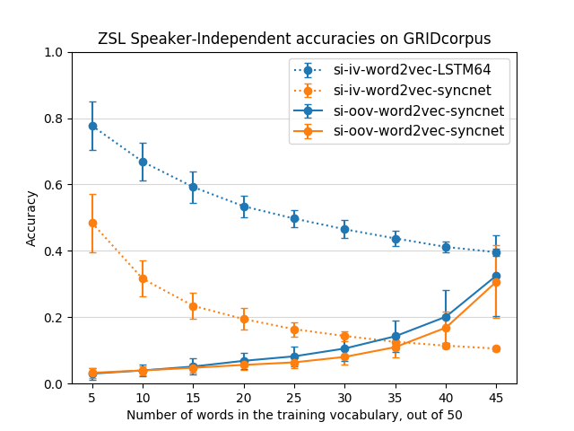

Setup all lipreader predictions, and binary value for correctness
Setup attributes - speaker identity, word durations, bilabials
Extracted head poses on GRIDcorpus using dlib
Setup range of head poses for each word as attribute
Setup audio features as attributes
Discriminative clustering a la Aayush Bansal et al.
Assess the assessor!
Got SyncNet pre-trained weights from Joon Soon Chung
Figured out ACTUAL SyncNet architecture (set up in Keras)
Used SyncNet for ZSL - abysmal results
Maybe extract features in a better way?
Figure 1: Comparison of ZSL with lipreader features vs with Syncnet features - Speaker-dependent, out-of-vocabulary

Figure 2: Comparison of ZSL with lipreader features vs with Syncnet features - Speaker-INdependent